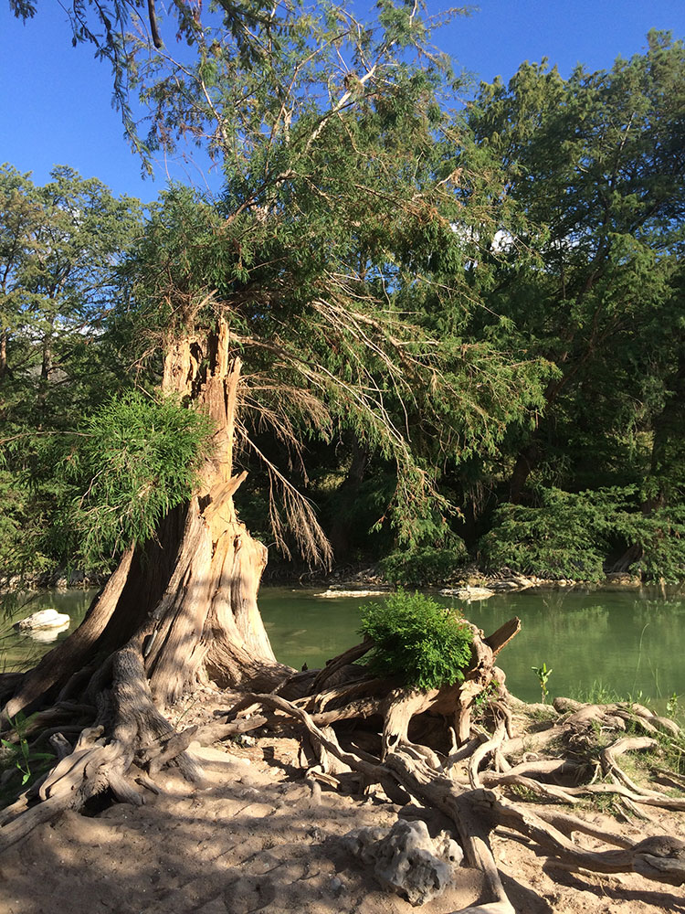
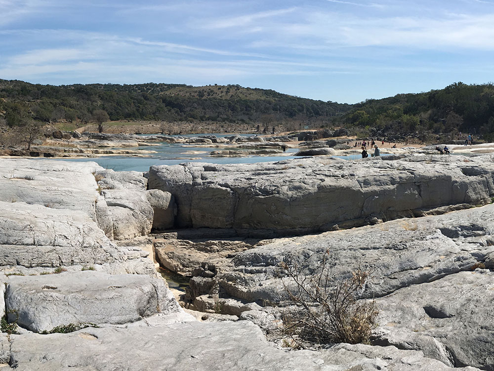
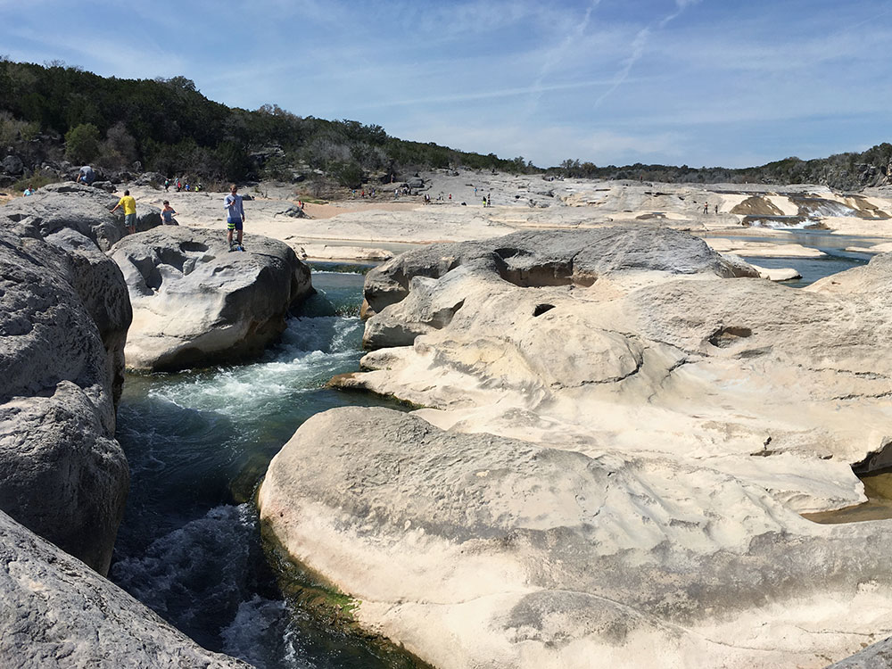
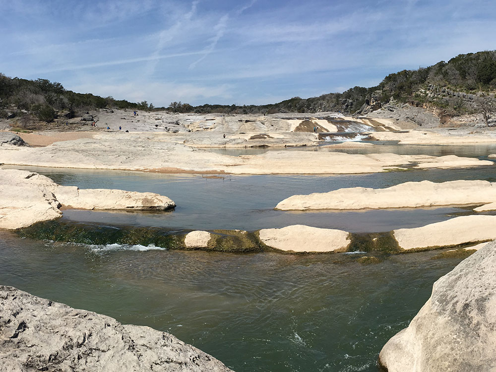
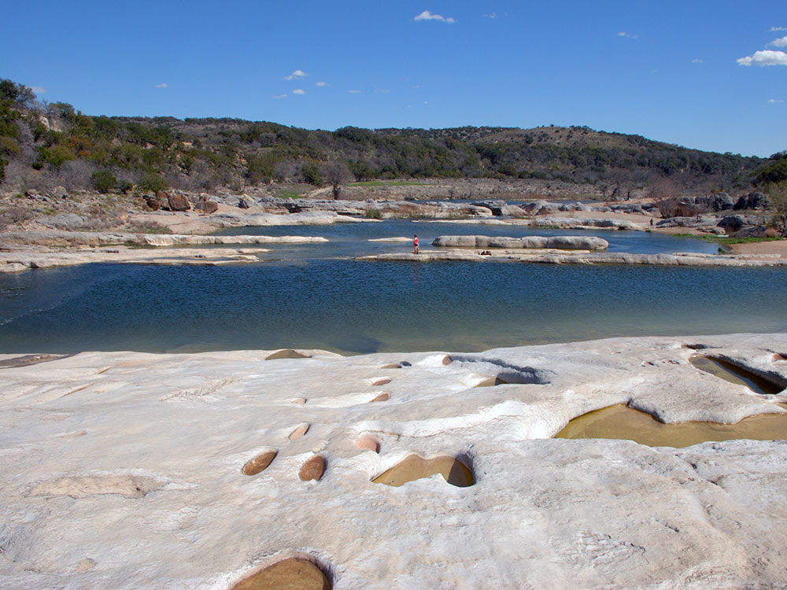

5,212-acre state park situated along the banks of the Pedernales River in Blanco County, Texas
General Information
How to Get There
From Fredericksburg (13 mi): Take US-290 East approximately 9 miles, then turn left (north) onto Ranch Road 3232 and follow it about 6 miles to the park entrance on Park Road 6026.
Overview
Pedernales Falls State Park is a 5,212-acre Texas state park along the Pedernales River in Blanco County, about 9 miles east of Johnson City and 40 miles west of Austin. Its centerpiece is Pedernales Falls, a series of cascading limestone steps where the river tumbles for roughly a mile before pooling into calm, clear stretches, and the tilted, layered slabs expose roughly 300 million years of the Edwards Plateau's geologic history. The land was once the Circle Bar Ranch before Texas purchased it in 1970 and opened it as a state park the following year. Visitors come to see the falls, wade and swim in designated areas, and explore miles of trails for hikers, mountain bikers, and equestrians in cedar and live-oak Texas Hill Country terrain. Both developed and backcountry campsites make it a popular overnight destination close to Austin.
Access
The park entrance is on Park Road 6026, off Ranch Road 3232 north of US 290, about 9 miles east of Johnson City and roughly 40 miles west of Austin. Visitors travel by car, and there is no public transportation. Texas Parks and Wildlife uses reservations and capacity limits at its busiest parks, and this park often fills on warm weekends, so check current day-use and camping reservation rules. The main falls viewing area is a short drive from the entrance, but rocky terrain near the river is uneven and slick, so wear sturdy shoes.
Seasons
Spring brings wildflowers and comfortable temperatures, making March through May one of the best times to visit for hiking and camping. Summers are hot, so river swimming and wading in designated areas are popular, and early mornings are best for trails. Fall is mild with good conditions for hiking and mountain biking, and winters are cool with occasional freezes, quieter trails, and easier camping. Flash flooding is the main seasonal hazard: after heavy rain upstream the Pedernales River can rise quickly, and the falls area, river access, and some trails may be closed. In dry spells the water can be low and the falls less dramatic.
Things to Do
View the Pedernales Falls
See the park's signature attraction where the Pedernales River cascades over massive limestone slabs, creating one of the most recognizable landscapes in the Texas Hill Country.
Swim in the Pedernales River
Enjoy designated swimming and wading areas along the river, offering a refreshing escape during warm Texas days.
Hike More Than 40 Miles of Trails
Explore scenic trails that traverse rivers, canyons, forests, springs, overlooks, and rugged Hill Country terrain.
Mountain Bike Through the Hill Country
Ride a variety of trails ranging from beginner-friendly routes to the challenging Juniper Ridge Trail.
Paddle the Pedernales River
Bring a kayak, canoe, or tube and experience the river from a different perspective.
Go Horseback Riding
Experienced riders can explore rugged equestrian trails that cross limestone hills and scenic backcountry areas.
Camp Under the Stars
Choose from developed campsites with utilities or primitive sites for a more secluded outdoor experience.
Top Trails
Pedernales Falls Trail
Distance: 0.6 miles
Difficulty: Easy
Highlights: Close-up views of the famous limestone falls and river formations.
Twin Falls Nature Trail
Distance: 0.5 miles round trip
Difficulty: Moderate
Highlights: Scenic overlook and one of the most picturesque viewpoints in the park.
Wolf Mountain Loop Trail
Distance: 5.5 miles
Difficulty: Moderate
Highlights: Hill Country views, springs, creek crossings, and panoramic scenery from Tobacco and Wolf Mountains.
Jones Spring Trail
Distance: 2.6 miles
Difficulty: Moderate
Highlights: Cedar forests, historic rock house ruins, and a natural spring.
Juniper Ridge Trail
Distance: 9.7 miles
Difficulty: Challenging
Highlights: Technical single-track terrain, shaded sections, and advanced mountain biking opportunities.
Hackenburg Loop Trail
Distance: 1.4 miles
Difficulty: Moderate
Highlights: River views, rugged terrain, and evidence of the area's powerful flash-flood geology.
Cypress Mill Loop
Distance: 4.9 miles
Difficulty: Moderate
Highlights: River crossings, historic sites, scenic overlooks, and quieter areas of the park.
Visitor Centers
The park headquarters near the entrance is where visitors pay fees, check in for camping, and get maps and trail and river condition updates. Rangers can advise on flood conditions and closures, which change often after rain. The headquarters is small, with limited exhibits, so most of the park experience is on the trails and at the river. Check the park's current schedule for any ranger-led programs.
Camping and Lodging
The park offers developed campsites with water and electricity, primitive sites, and backpacking sites, and reservations are strongly recommended on weekends and in spring and fall. Outside the park, lodging is closest in Johnson City, with motels, inns, and vacation rentals only minutes away. Fredericksburg, Blanco, Dripping Springs, and Marble Falls all have a wider selection of hotels and bed-and-breakfasts within about 30 to 60 minutes, and Austin offers the largest choice of lodging within about an hour. RV parks and additional campgrounds are found around Johnson City and Fredericksburg.
This article uses material from the Wikipedia articles and official tourism pages for the Pedernales Falls State Park, which are released under the Creative Commons Attribution-Share-Alike License 3.0.








